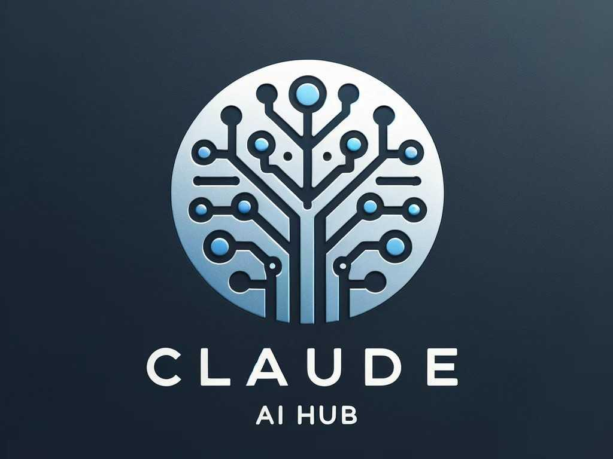
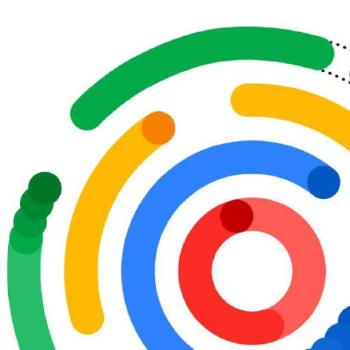
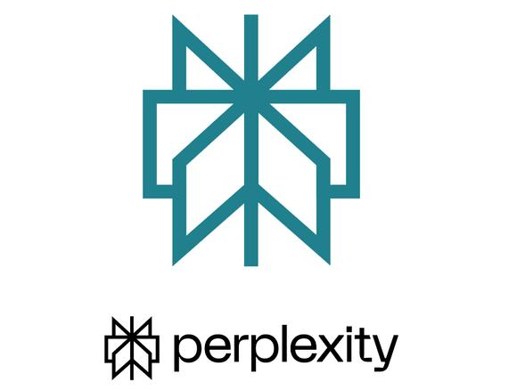

Generate realistic Agentic AI workflow simulations for planning, analysis, research, and execution tasks.
Scenario: Defines the context in which the agent operates.
Goal: Specifies the objective the agent must achieve.
Agent Persona: Ensures consistent behavior throughout the simulation.
Available Tools: Makes the simulation realistic by defining agent capabilities.
Tone: Controls communication style.
Number of Steps: Determines workflow complexity.
The generated prompt instructs the AI to:
This structure creates a realistic agentic AI experience.
Excellent for agent simulations and reasoning.

Strong for long-form multi-step workflows.

Useful for business and planning scenarios.

Helpful when simulations require research tasks.
Scenario: Project Planning
Goal: Launch Company Website
Persona: Project Manager
Tools: Email, Calendar, Documents
Tone: Professional
Steps: 5
Act as an Agentic AI Assistant.
Agent Persona: Project Manager.
Goal: Launch Company Website.
Use Email, Calendar and Documents.
Simulate a realistic 5-step workflow.
Step 1:
Thought Process: Understand project requirements.
Action Taken: Review project documents.
Tool Used: Documents.
Result: Scope defined.
Next Decision: Schedule kickoff meeting.